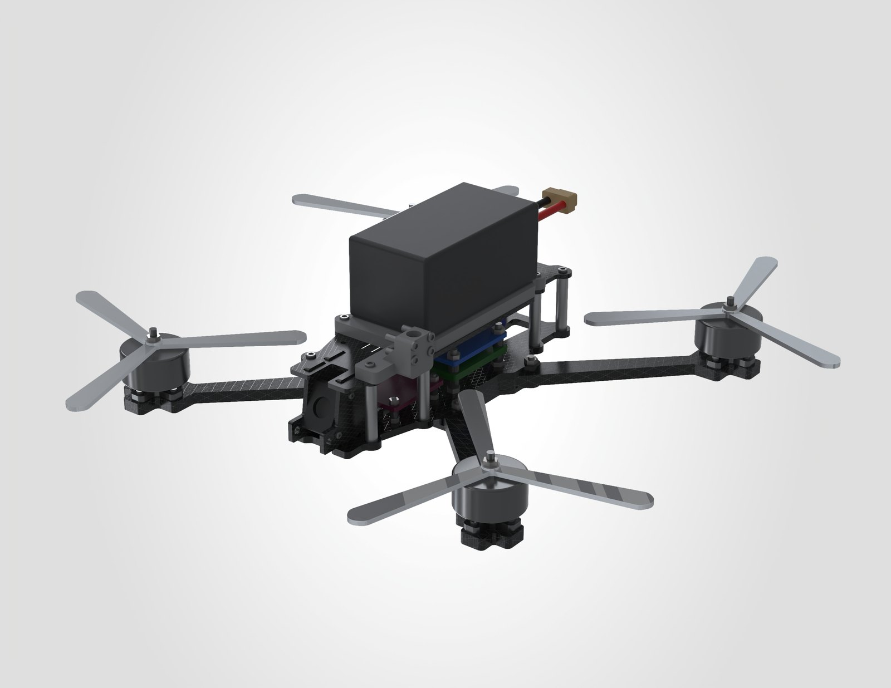
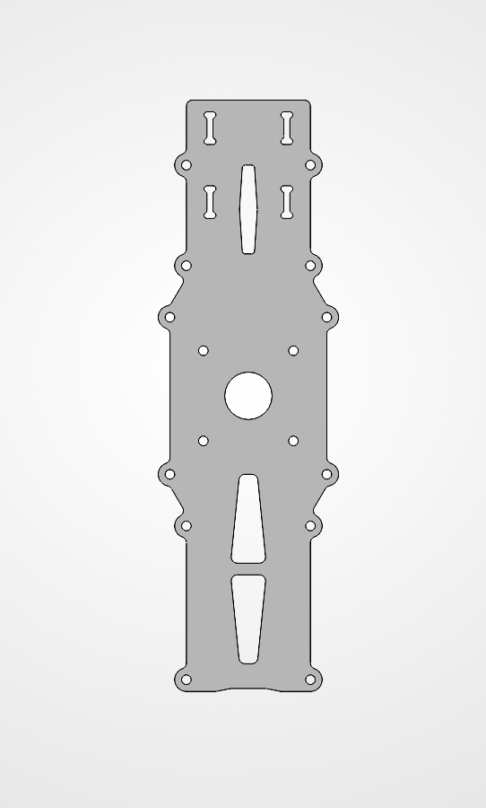
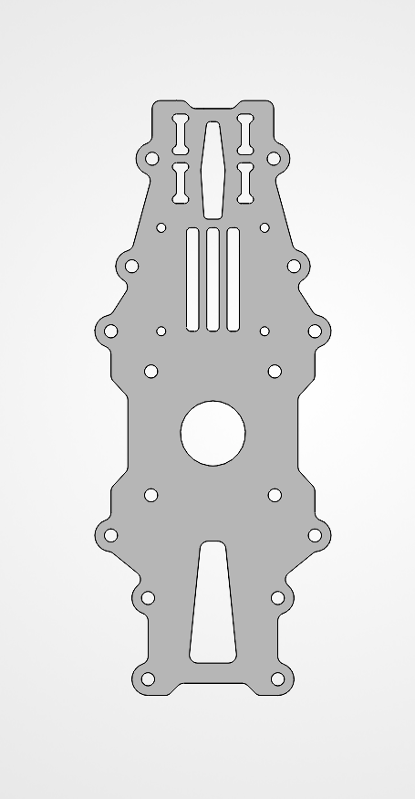
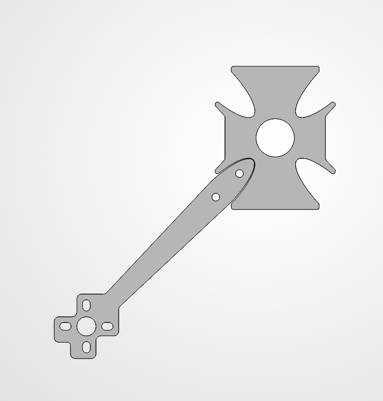
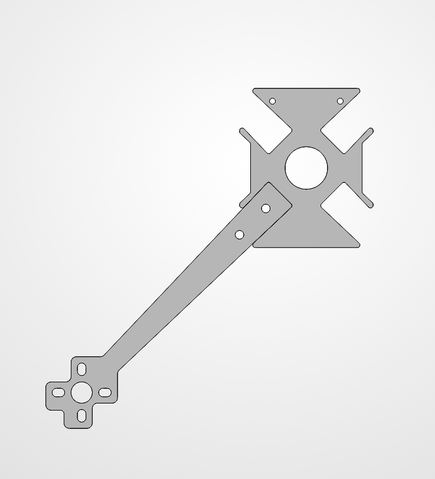
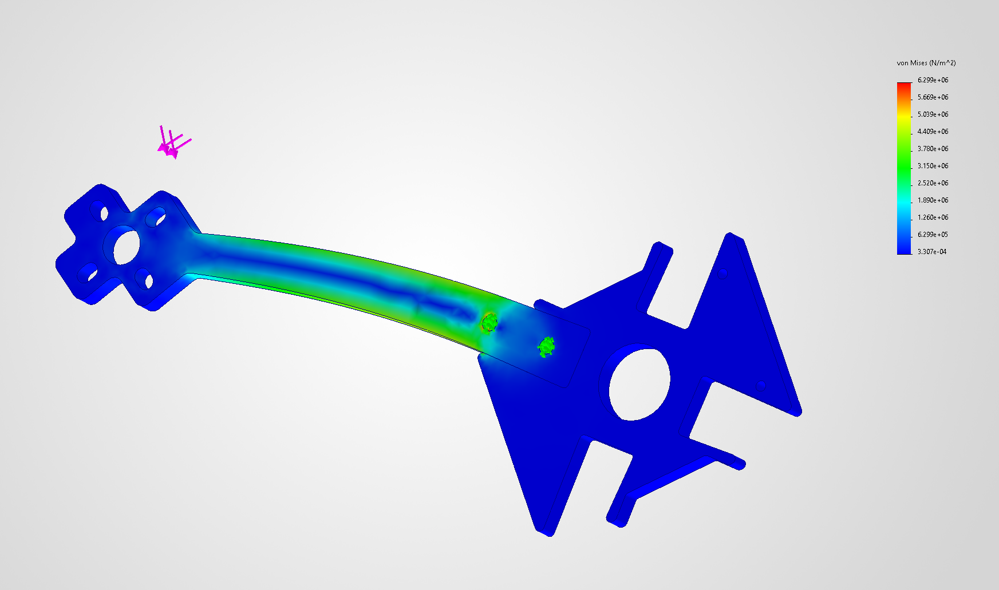
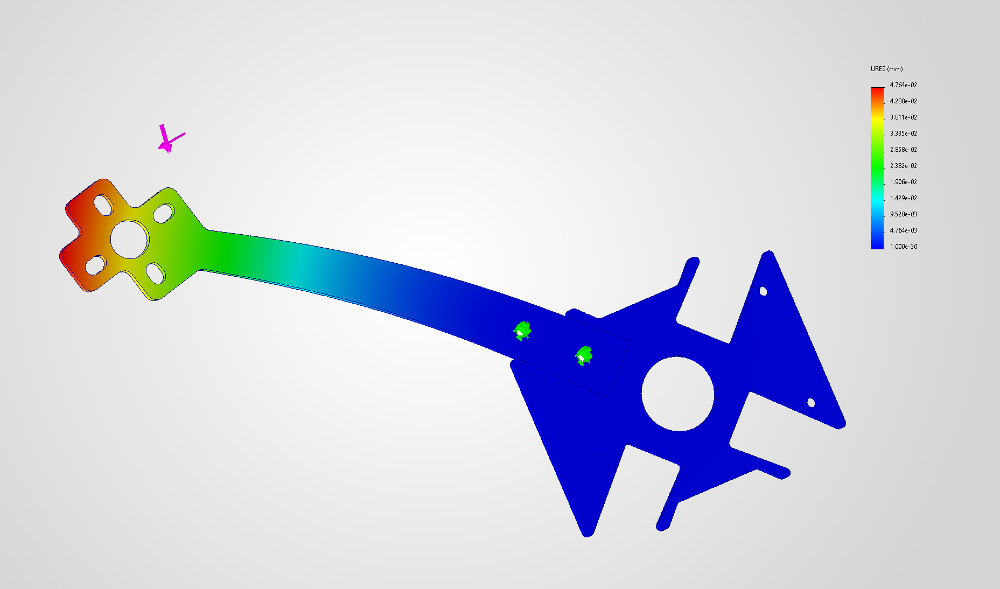
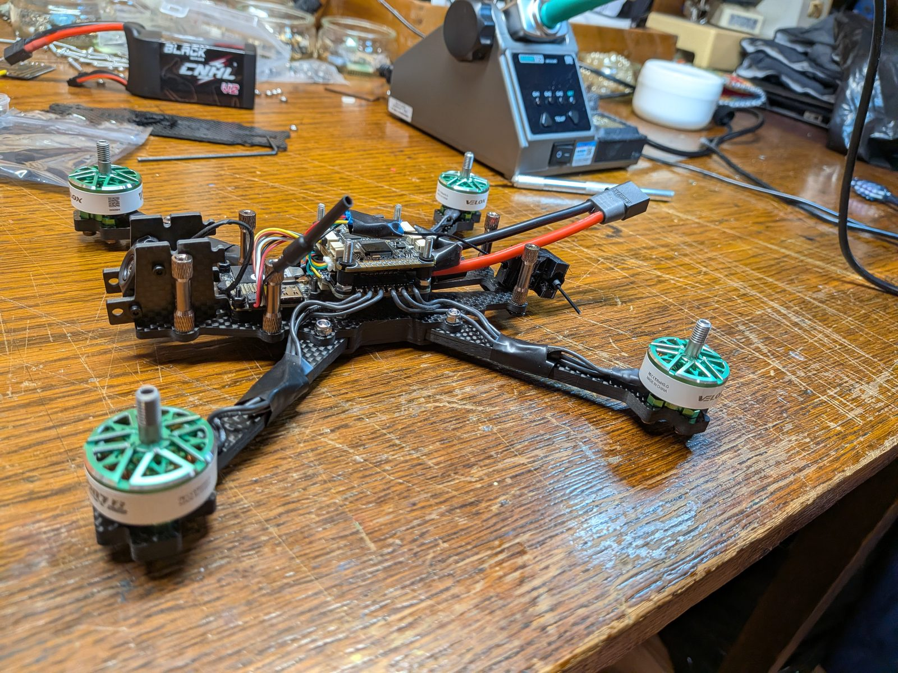
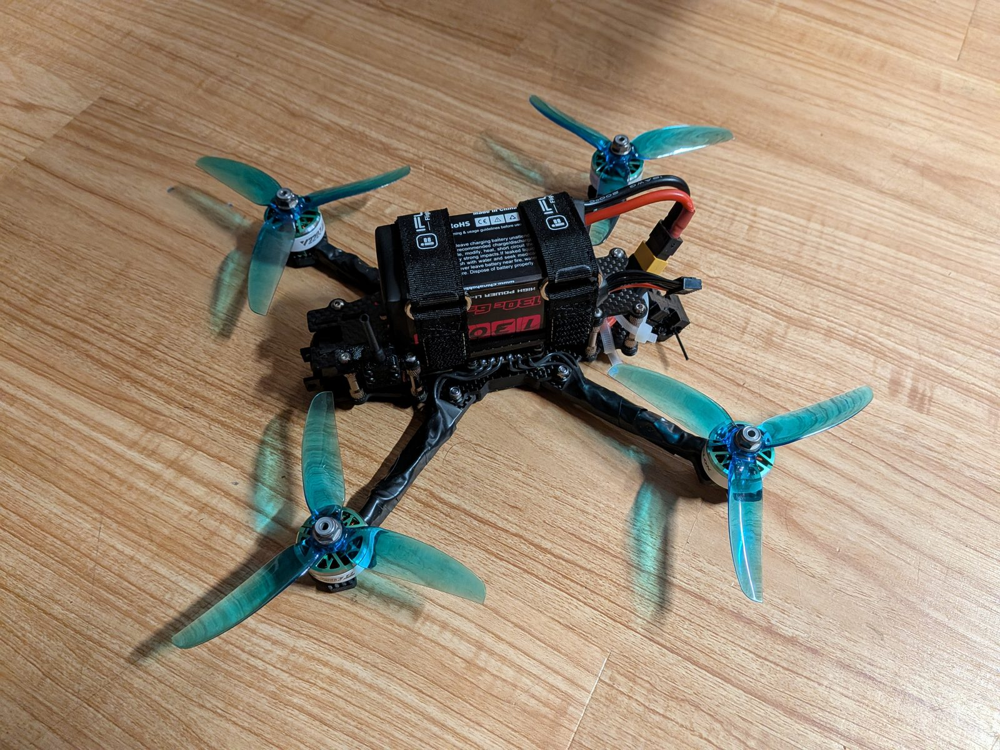

A custom 5-inch FPV frame built to carry the DJI O4 Air Unit natively,
without the 3D-printed adapters most frames need for it. The project ran
from first CAD through FEA screening, DFM for CNC routing, manufacturing,
assembly, and successful flight. The finished frame weighs 117 g against a
150 g target.

Full assembly render: custom carbon fiber frame, 6S electronics stack, T-Motor Velox 2207 1950KV motors, DJI O4 Air Unit.
Class
5-inch freestyle quadcopter
Bare frame mass
117 g (measured)
All-up weight
610 g measured (CAD: 560 g, +9%)
Frame
2/3/5 mm CNC-cut T300 woven carbon fiber (3K)
Motors
T-Motor Velox 2207, 1950KV
Battery
6S 1350 mAh LiPo
Video
DJI O4 Air Unit
Control link
ExpressLRS, RadioMaster TX16S Mk3
01Problem, Solution & Constraints
The Problem
Most FPV drone frames are designed exclusively around analog video hardware.
Accommodating a digital HD system like the DJI O4 Air Unit on these frames
typically requires bulky 3D-printed camera mounts, which shift the center
of gravity too far forward and compromise the weight distribution needed
for responsive freestyle flight. Frame designs also tend to trade
durability for weight savings, or vice versa, rather than optimizing
for both.
The Solution
A custom 5-inch FPV frame, designed, modeled, analyzed, and
CNC-manufactured, that houses both analog FPV hardware and the DJI O4
Air Unit natively, with no 3D-printed adapters. Mounting the O4 directly
to the frame keeps its mass low and centered in the stack. The arm-to-frame
joint was redesigned and checked with a finite element study.
Constraints
Bare frame mass less than 150g, to preserve a powerful thrust-to-weight ratio
Must natively house the DJI O4 Air Unit without additional 3D-printed mounting hardware
Must withstand high-G impacts typical of freestyle flight crashes (screened with a 20G quasi-static load case)
02Evolution of Design
Two parts went through the most iteration. The bottom
frame plate evolved to solve the DJI O4 packaging problem; the
arm-to-frame joint evolved to solve the durability problem.
Bottom Frame — Packaging & Native O4 Mounting
v1

v6

What changed: the original layout wasted length and
spaced the camera-plate slots generically. The final version compacts
the footprint, repositions the camera-plate slots to fit the DJI O4 Air
Unit, and adds mounting holes so the VTX mounts natively,
eliminating the 3D-printed adapter.
Arm-Lock Joint — Motion & Stress Control
v1

v6

What changed: the original elliptical slot allowed
excess movement between the arm and the arm-lock. The redesign replaces
it with a constrained rectangular pocket and a small fillet at the
corner, tightening the fit while avoiding a sharp corner stress riser.
This joint is analyzed in the FEA study below.
03Structural Analysis (FEA)
Isolated study of the arm and arm-lock joint only, the specific
feature redesigned above. Fixed at the arm's mounting holes; a 20G
quasi-static load (6.8N) applied at the motor-mount face.

Von Mises stress. Max stress 6.3 MPa, located at the fastener hole furthest from the arm-to-slot joint.

Resultant displacement (URES). Peak deflection of 0.048 mm concentrated at the motor-mount end, as expected for a cantilevered arm.
Material: the frame is cut from T300 woven carbon
fiber. The FEA used Hexcel AS4C properties (E = 75,000 MPa,
ν = 0.3, tensile strength 550 MPa), the closest carbon fiber
available in the SolidWorks material library. Result: Factor of Safety ≈ 87 against this load
case. Within this model, peak stress reaches the 550 MPa tensile
strength at about 594N, roughly 87× the applied load. Two things drive the
margin: the load case is small, and plate thickness came from the
standard 2/3/5mm stock the shop cuts. A thinner layup would have saved
weight but required non-standard stock and added CNC cost, for little
gain with the frame already at 117g against a 150g ceiling.
Model limitations. This study treats the laminate as an
isotropic solid and evaluates it with von Mises, a ductile metal yield
criterion. Neither assumption holds for a woven carbon fiber layup, so
treat this as an initial screening check on load path and stiffness. The
main failure modes for this joint
are bearing at the fastener holes and delamination, neither of which a
static study resolves. The fixed-geometry constraint at the mounting
holes assumes an infinitely stiff joint with no bolt preload or contact,
so peak stress at a fastener hole is sensitive to that assumption. The
6.8N load is a 20G quasi-static case on the
motor mass. Crash loading is a dynamic energy problem that a static
study cannot capture at any load magnitude.
04Mass Properties & DFM
The principal mass moments of inertia describe how the aircraft's mass
sits about each rotation axis. They determine roll/pitch/yaw control
authority and PID tuning behavior.
The ratios between these values were used as an initial gain input for pitch and roll,
since both are actuated similarly, and as a general guide for
balancing PID response across all three axes, including yaw, which is
actuated differently and tuned by feel.
0.00160
kg·m²
Ixx — Roll
0.00193
kg·m²
Iyy — Pitch
0.00292
kg·m²
Izz — Yaw
Design for Manufacturing (DFM)
All frame plates (shown in Section 02) are restricted to standard
commercial carbon fiber stock thicknesses (2mm, 3mm, and 5mm) to avoid
custom milling costs at the machine shop. Internal corners use dogbone
fillets sized to the CNC router's bit diameter. A round tool can't cut a sharp
internal corner, and without relief it leaves an uncut radius that stops
mating parts from seating. The dogbone overcuts that corner so the joint
closes, accepting a small stress concentration at the relief in exchange.
Interlocking arm slots have micro-clearances
sized for a toolless, hand-assembled fit.
CNC-manufactured carbon plates, soldered electronics, and
Betaflight/ESC configuration.

Frame and motors assembled, stack wired ahead of final power connections.
Electronics packaging: a Rubycon low-ESR 470µF
35V capacitor was soldered to the ESC to suppress voltage spikes from
the 6S pack under hard throttle punches. RF & flight software: RadioMaster TX16S Mk3
running EdgeTX and ExpressLRS; PID gains in Betaflight were initially
set using the aircraft's moment of inertia ratios (Section 04).

Fully assembled, flight-ready: the redesigned frame, native O4 mounting, and flight-tested joint geometry all present in the final build.
07Flight Test
Ground-view footage of the first test flight.
08Results
Each constraint from Section 01, scored against what the build actually
achieved.
Constraint
Target
Outcome
Bare frame mass
Under 150 g
117 g, measured on the manufactured frame
Native O4 mounting
No 3D-printed mounting hardware
Met. Camera plates and VTX mounting holes are cut into the frame
Impact resistance
Withstand high-G freestyle crashes
Screened under a 20G quasi-static case only. Crash survival is not demonstrated by this analysis
Prediction vs. reality: CAD predicted 560 g all-up
against 610 g measured, about 9% light. The model used simplified block
geometry for the electronics, motors, and fasteners, and carried no
wiring, solder, heat shrink, or zip ties, which is where most of the
difference sits.